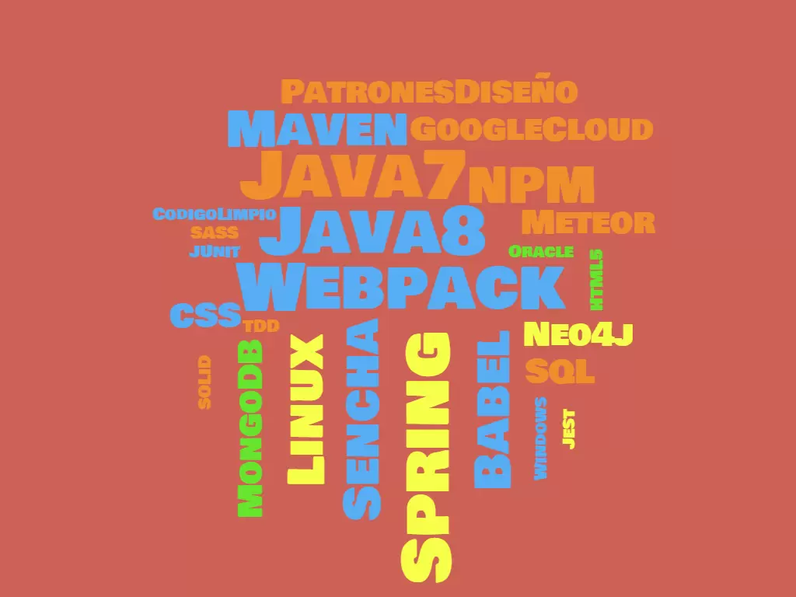

FrontEnd
BackEnd
Otras mas

El Grado en Ingeniería Informática en Tecnologías de la Información esta orientado a la
creación de sistemas informaticos y generación de las comunicaciones entre ellos.
Los estudios se han realizado la mayor parte en Java y C.
Aquí podras encontrar todos los medios posibles para poder contactar conmigo.
Este es un listado de mis experiencias laborales, cada experiencia esta resumido,
los proyectos realizados y que tecnologias.
Si quieres leer mas pincha sobre
el!!
Mi función principal, ha sido el desarrollo full stack en varios dispositivos
utilizando tecnologias Javascript y Java.
Tambien he integrado nuevas tecnologias a la linea
de desarrollo, como Google Cloud (API's and Cloud Run) o Vue y Webpack para la zona frontend.
Desarrolle un Servient(Client/Server) de IOT en Java siguiendo el estandar W3C.
Utilizando protocolos de comunicación como MQTT, HTTP, WebSocket y
RX.js.
Tambien desarrolle APP webs usando Angular y Meteor js, mi objetivo era el soporte a Doctores para la
elaboración de sus proyectos.
Mi aprendizaje comenzo en esta empresa. Desarrollando una aplicación full stack
en Spring Boot, solicitando información a una Cloud IBM donde contenia los
datos.
Aqui aprendí tecnologias nuevas como Angular y TypeScript.